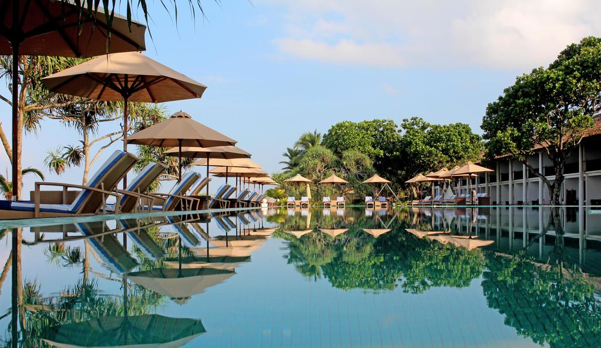

ATTRACTION PLACES

Known as The Pearl Of The Indian Ocean, For It's Natural Beauty. It's Worth Exploring For The Immense Diversity It Offers You. According to The National Geographic And The Traveler Magazines, Sri Lanka is among the Top Tourist Destinations In The World rankings"
The eye catching sighs of sri lanka has a hugh recognition around the world the local and foreign travellers always wanted to travel sri lanka with and proper guidance to have a look the pleasent places in the country
So the aim of this page is to provide every travellers a proper idea to have a look in there wanted places to visit
ACCOMONDATION

providing every travellers a very good hospitality through best satisfied and well recognised hotels from island wide in the attractive areas Sri Lanka has an excellent range of accommodation in all price brackets, from basic beachside shacks to elegant colonial mansions and sumptuous five-star resorts – indeed staying in one of the country’s burgeoning number of luxury hotels and villas can be one of the principal pleasures of a visit to the island, if you can afford it. Sri Lanka is waking up to its massive eco-tourism potential, and now boasts good eco-oriented hotels and lodges. You can also stay in bungalows or camp within most of the island’s national parks, although this can be difficult to arrange. The national parks are the only places in Sri Lanka with official campsites, and elsewhere camping is not a recognized activity. recommending every travellers to choose there place of stay feel like home and more.
TRANSPORT SERVICE AND FARES
reccommending travel friendly environment vehicles with insured for any inconvinience or damage Every travellers can hire vehicles and can explore the country with the way they wanted Public Transportation in Sri Lanka is based mainly on the road network which is centered on Sri Lanka's capital, Colombo. Buses, three-wheelers and trains make up the public transport system. Airports, harbors and waterways are also there. Most of the roads in Sri Lanka are in good condition; however some roads in the rural areas might not be up to standards. Below are a list of means of transport that you can consider while visiting Sri Lanka: